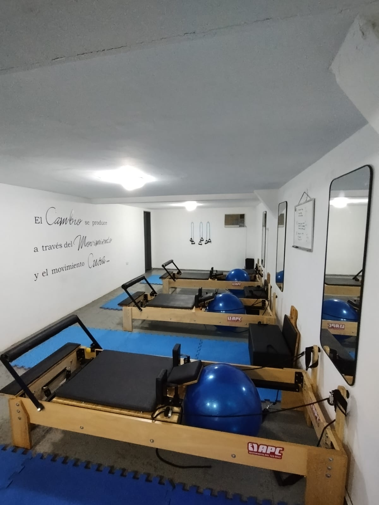
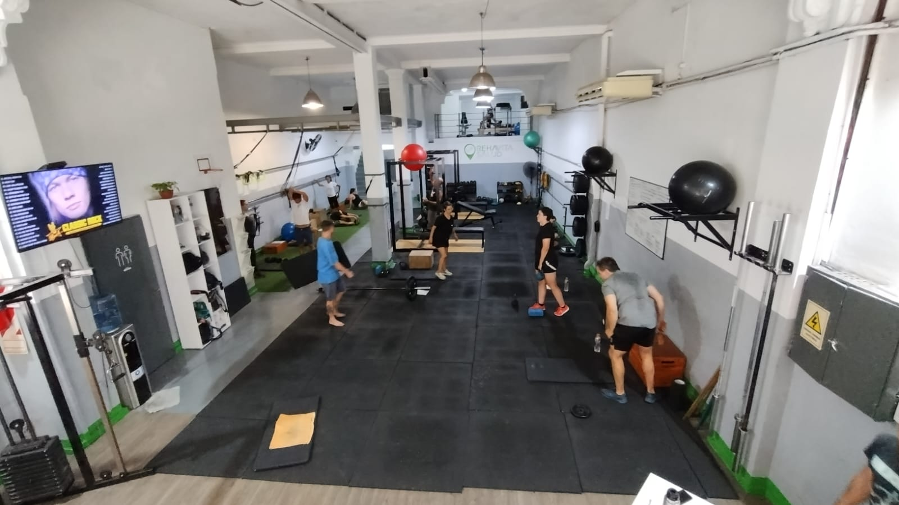
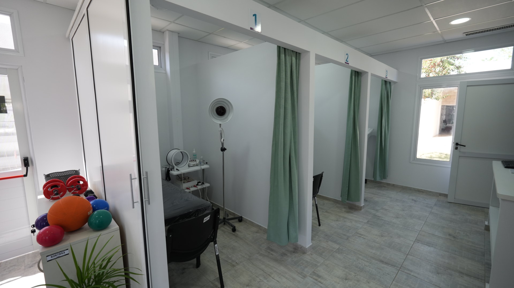

Actividades
PILATES
El método se centra en el desarrollo de los músculos internos para mantener el equilibrio corporal y dar estabilidad y firmeza a la columna vertebral, por lo que es muy usado como terapia en rehabilitación y para, por ejemplo, prevenir y curar el dolor de espalda. Se practica en todo el mundo y su popularidad es cada vez mayor debido a que es practicado por personajes famosos del mundo de la música, el cine, la danza y el deporte.
Es un sistema de entrenamiento físico y mental que une el dinamismo y la fuerza muscular con el control mental, la respiración y la relajación.
GIMNÁSIO
El entrenamiento con pesas o entrenamiento con cargas es una manera habitual de ejercicio, en el cual se usa la fuerza de gravedad (a través de los discos, las mancuernas, las máquinas con polea y/o palancas) que se opone a la contracción muscular. Realizado propiamente, el entrenamiento con pesas puede proporcionar beneficios funcionales significativos, como: el aumento de tono muscular, el aumento de la masa muscular, la ayuda en la reducción de peso, y una mejora en la salud en general y del bienestar.
Idealmente las sesiones de entrenamiento deben estar divididas en rutinas o planes de entrenamiento, que incluyan un debido calentamiento. así como ejercicios monoarticulares y de los músculos estabilizadores, como el abdomen y la zona baja de la espalda o lumbar. En nuestro gimnasio vas a contar con tu propia rutina personalizada basada en tus objetivos
KINESIOLOGÍA
Aborda los principios y mecanismos de movimientos fisiológicos, biomecánicos y psicodinámicos. Las aplicaciones de la kinesiología a la salud humanacincluyen biomecánica y ortopedia, psicología del deporte adquisición de habilidades y aprendizaje motor, métodos de rehabilitación y fisiología del deporte y el ejercicio.
La adaptación a través del ejercicio es un principio clave de la kinesiología que se relaciona con la mejora del estado físico en los atletas, así como con la salud y el bienestar de las poblaciones clínicas. El ejercicio es una intervención simple y establecida para muchos trastornos del movimiento y afecciones musculoesqueléticas debido a la neuroplasticidad del cerebro y la adaptabilidad del sistema musculoesquelético. Nuestros box de kinesiología y kinesiólogos estan totalmente equipados y capacitados para rehabilitar correctamente a todos nuestros pacientes.